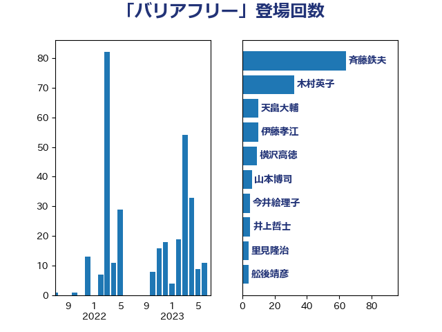

単語「バリアフリー」

| 斉藤鉄夫 | 公明党 | 64 回 |
| 木村英子 | れいわ新選組 | 32 回 |
| 天畠大輔 | れいわ新選組 | 10 回 |
| 伊藤孝江 | 公明党 | 10 回 |
| 横沢高徳 | 立憲民主党 | 9 回 |
| 山本博司 | 公明党 | 6 回 |
| 今井絵理子 | 自由民主党 | 5 回 |
| 井上哲士 | 日本共産党 | 5 回 |
| 里見隆治 | 公明党 | 4 回 |
| 舩後靖彦 | れいわ新選組 | 4 回 |
| 牧原秀樹 | 自由民主党 | 4 回 |
| 津島淳 | 自由民主党 | 4 回 |
| 松本剛明 | 自由民主党 | 4 回 |
| 山本佐知子 | 自由民主党 | 4 回 |
| 豊田俊郎 | 自由民主党 | 3 回 |
| 山口那津男 | 公明党 | 3 回 |
| 高橋千鶴子 | 日本共産党 | 2 回 |
| 阿部知子 | 立憲民主党 | 2 回 |
| 阿部司 | 日本維新の会 | 2 回 |
| 赤木正幸 | 日本維新の会 | 2 回 |
| 谷田川元 | 立憲民主党 | 2 回 |
| 谷合正明 | 公明党 | 2 回 |
| 西村康稔 | 自由民主党 | 2 回 |
| 窪田哲也 | 公明党 | 2 回 |
| 石井苗子 | 日本維新の会 | 2 回 |
| 湯原俊二 | 立憲民主党 | 2 回 |
| 岸田文雄 | 自由民主党 | 2 回 |
| 小倉將信 | 自由民主党 | 2 回 |
| 室井邦彦 | 日本維新の会 | 2 回 |
| 堀内詔子 | 自由民主党 | 2 回 |
| 吉井章 | 自由民主党 | 2 回 |
| 高橋光男 | 公明党 | 1 回 |
| 鈴木俊一 | 自由民主党 | 1 回 |
| 金子俊平 | 自由民主党 | 1 回 |
| 金城泰邦 | 公明党 | 1 回 |
| 野田国義 | 立憲民主党 | 1 回 |
| 近藤和也 | 立憲民主党 | 1 回 |
| 西銘恒三郎 | 自由民主党 | 1 回 |
| 萩生田光一 | 自由民主党 | 1 回 |
| 自見はなこ | 自由民主党 | 1 回 |
| 竹内真二 | 公明党 | 1 回 |
| 福島伸享 | 無所属 | 1 回 |
| 福山哲郎 | 立憲民主党 | 1 回 |
| 石井浩郎 | 自由民主党 | 1 回 |
| 渡辺猛之 | 自由民主党 | 1 回 |
| 渡辺周 | 立憲民主党 | 1 回 |
| 永岡桂子 | 自由民主党 | 1 回 |
| 水岡俊一 | 立憲民主党 | 1 回 |
| 櫛渕万里 | れいわ新選組 | 1 回 |
| 杉田水脈 | 自由民主党 | 1 回 |
| 末松信介 | 自由民主党 | 1 回 |
| 新妻秀規 | 公明党 | 1 回 |
| 斎藤嘉隆 | 立憲民主党 | 1 回 |
| 工藤彰三 | 自由民主党 | 1 回 |
| 小宮山泰子 | 立憲民主党 | 1 回 |
| 城井崇 | 立憲民主党 | 1 回 |
| 和田義明 | 自由民主党 | 1 回 |
| 伊藤孝恵 | 国民民主党 | 1 回 |
| 伊藤俊輔 | 立憲民主党 | 1 回 |
| 丹羽秀樹 | 自由民主党 | 1 回 |